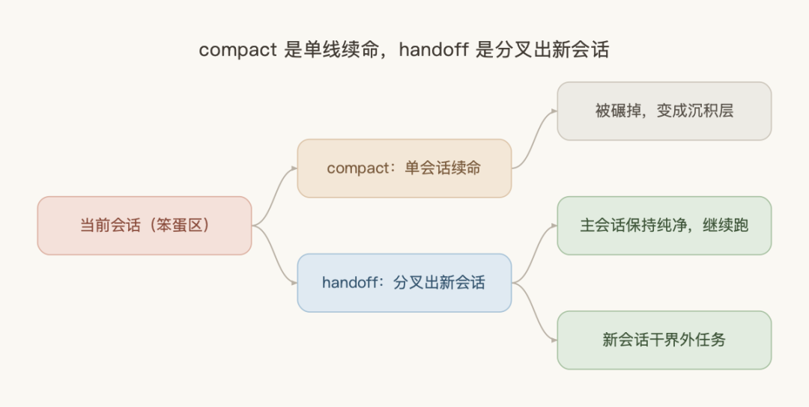
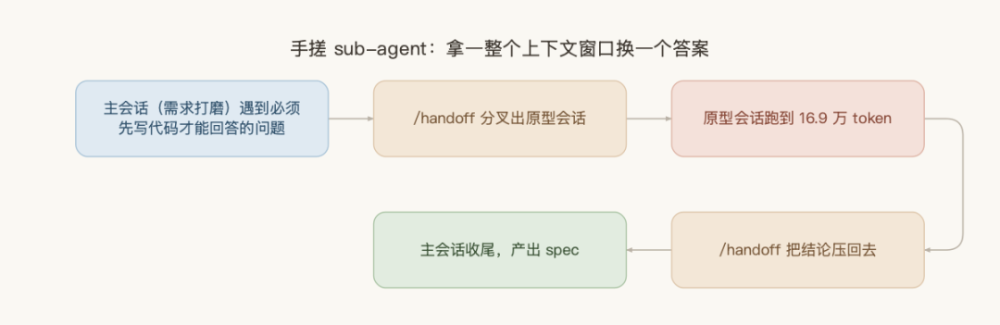
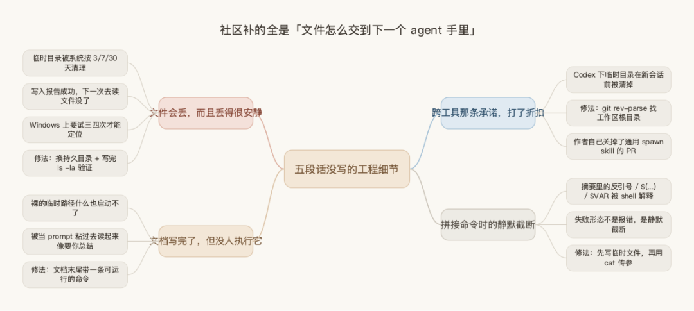
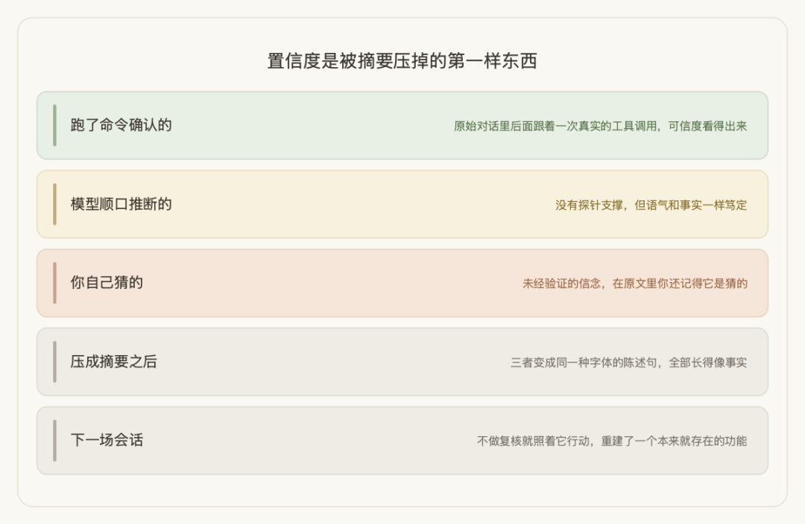

下午三点，你和 agent 已经聊了两个多小时。
前一个小时它像换了个人：你说改哪个函数，它精准定位，改完还顺手把相关测试补了。现在你让它把刚才那处改动撤回去，它开始满仓库找一个文件路径——那个路径你二十分钟前刚贴给它。你提醒一句，它道个歉，然后把旁边一段没坏的代码也顺手「优化」了。
你心里清楚发生了什么：上下文太长了，它开始拎不清哪句话重要。
这时候大部分人会做同一个动作——compact，把对话压一压重新开始。但其实还有第二个选择，而且很多时候是更好的那个。
Matt Pocock 是 Total TypeScript 的作者，教开发者写 TypeScript 出身，这两年转向 AI 编程，做了个叫 AI Hero 的教学项目。他把自己的编码习惯打包成 skill 开源，那个仓库现在有 20 万 star。
里面几十个 skill，最简单的一个只有 879 字节——去掉 frontmatter，正文五段话，没有模板、没有章节结构、没有字段清单。他自己说这是工具箱里的必备。
"I put this into my skills folder as an experiment to see how much I would use it, and it turns out I used it a lot."
我把这个 skill、他的十二分钟讲解、以及仓库里三个月积累的十三个相关 issue 全部翻了一遍。下面讲清楚三件事：它到底解决什么问题、怎么用、以及它自己没解决的那部分。
一、会话里有「聪明区」和「笨蛋区」
Matt 在那段讲解里花了将近三分钟铺垫这件事，而且给了一个很硬的数字。
Claude Code 标称一百万 token 上下文。但他的实际体感是：
"around by the 120k token mark, I start to feel like I'm in the dumb zone."
原因不复杂：上下文里 token 越多，attention 关系越多，模型注意力越涣散。早期阶段的回答质量明显更好，越往后越钝。所以他的结论是——
"really for proper smart tasks, you've only got about 120k to work with"
这是标称容量和可用容量之间一个数量级的落差。另一位开发者 Nathan Onn 独立给出的阈值更保守：上下文用到 20% 就该收尾。在百万上下文下，20% 已经是二十万 token，差不多一小时的开发量。两个数字落在同一量级。
撞到笨蛋区之后怎么办？大多数人只知道一个答案：compact。
compact 做的是把长对话总结一遍，从笨蛋区一步拉回聪明区。Matt 对它评价其实很正面，尤其在 debug 场景——你可以把试过的方案压缩掉，继续试新的，撞墙，再压一次，本质上是在存档。
但 compact 有两个代价。
第一，它会留下沉积层。每次 compact 都在上一层摘要之上再摘要，几轮之后你面对的是一堆经过多次转述的残留信息。
第二，也是更关键的：compact 始终只有一条线。
Matt 讲了一个所有人都遇到过的场景。你在会话里干着干着，突然发现一处该重构的地方——完全在当前 scope 之外，但早晚得做。你有几个选择？
继续在当前会话里做，上下文被稀释成一半这个一半那个，最后大概率两件事都没干完；或者 compact，但那样当前进展全被碾掉。
"What I really wanted to do was just say, OK, I want to complete this other thing in a separate session and keep my current session pure."
这就是 handoff 和 compact 的分工：

一个是给单条河续命，一个是开支流。
二、这个 skill 只有五段话
知道它要干什么之后再看代码，会觉得意外地少。skills/productivity/handoff/SKILL.md 全文如下，一屏就能看完：
--- name: handoff description: Compact the current conversation into a handoff document for another agent to pick up. argument-hint: "What will the next session be used for?" disable-model-invocation: true--- Write a handoff document summarising the current conversation so a fresh agent can continue the work. Save to the temporary directory of the user's OS - not the current workspace. Include a "suggested skills" section in the document, which suggests skills that the agent should invoke. Do not duplicate content already captured in other artifacts (specs, plans, ADRs, issues, commits, diffs). Reference them by path or URL instead. Redact any sensitive information, such as API keys, passwords, or personally identifiable information. If the user passed arguments, treat them as a description of what the next session will focus on and tailor the doc accordingly. 翻译成中文，五条规则：
写一份交接文档，让一个全新的 agent 能接着干；存到操作系统的临时目录，不要存进当前工作区 文档里带一节「建议使用的 skill」，告诉下一个 agent 该调什么 - 不要重复其他 artifact 已经记录过的内容
（spec、plan、ADR、issue、commit、diff），用路径或 URL 引用 API key、密码、个人身份信息必须脱敏 用户传了参数就当作「下一场会话要聚焦什么」，据此定制文档
frontmatter 里有两个字段值得单独说。disable-model-invocation: true 意味着模型不能自己决定调用它，只能你手动敲 /handoff。argument-hint 那句提示——「下一场会话要用来干什么」——是在逼你每次调用时都交代目的。
后面会讲到，这两个约束都不是随手加的。
三、三种用法
3.1 把界外任务分叉出去
这是最基础的用法，也是这个 skill 的起源。
Matt 演示的场景是他在做需求打磨（他叫 grilling，agent 连续向你提问、逼你把需求想清楚）。刚问到第二个问题，他意识到某个模块未来应该拆成独立 API——但这不是当前这场要解决的事。
他的做法不是记个 TODO，而是当场 /handoff，并且明确说清为什么要交接、那份文档里该有什么。
有意思的是副作用。他发现这个动作会立刻让当前会话变锋利：
"it actually sharpens the current grilling session I'm on. So it says that given that constraint, Q2 collapses."
声明「这件事分叉出去」，等于给当前讨论划了一条边界。边界一划，原本悬着的问题反而收敛了。这跟人开会时说「这个议题我们单独约一次」是同一个效果——不是拖延，是让当前议题重新聚焦。
3.2 分叉出去做原型，再接回来
这是三种用法里最漂亮的一种，也是最值得抄的。
需求打磨到一定深度，问题会分成两类：一类 agent 能直接问你、你能直接答；另一类你必须先看到代码跑起来才知道答案——UI 交互长什么样、某段复杂逻辑到底可不可行。
Matt 的闭环是这样的：

主会话（需求打磨）遇到「必须先写代码才能回答」的问题 /handoff分叉出原型会话——这场后来跑到了 16.9 万 token，远超需求打磨那场能容纳的量 原型做完，再 /handoff把结论压回去主会话拿着验证过的答案收尾，产出正式的 spec 和 issue
第三步的措辞是关键。他要求交接回去的不是原型代码——那已经在 git 里了——而是「原型本身没有直接体现的、不那么显而易见的」东西。
他自己给这个模式的定性是：
"It's almost like you've done a kind of DIY sub-agent, where you're able to use a context window for one specific task, compress your learnings from that task and pass it back to the parent."
用一整个干净的上下文窗口换一个具体问题的答案，然后只把答案带回来。原型会话烧掉的十几万 token 全部留在了那一侧，主会话只收到几百字的结论。
这件事之所以成立，前提恰恰是第一节那个数字：如果一百万上下文真的能用满，你根本不需要分叉，一路往下写就行。正因为可用区间只有十几万，「拿新窗口换答案」才变成一笔划算的买卖。
3.3 跨工具传递
这一条是 markdown 载体带来的白送好处。
第一场会话可以是 Claude Code，交接文档可以直接丢给 Codex、Copilot CLI 或者别的什么。想做跨模型的对抗式评审——同一份工作让另一个厂商的模型来挑毛病——这是成本最低的做法。
不过这条在实践里是有折扣的，第五节会讲到。
四、五条规则背后的理由
Matt 在讲解最后逐条解释了为什么这么写。这部分对任何写过 skill 的人都有参考价值。
为什么要有「建议使用的 skill」这一节。 他用 skill 来定义一场会话的「口味」。交接文档里带上这一节，你把文档粘进新会话，agent 会自动去调需要的 skill，你不用再想「这场该用哪几个」。
为什么禁止重复其他 artifact。 这条是被逼出来的——他发现交接文档越写越大，而里面大部分内容在别的 markdown 文件或者 issue 里已经有了。所以规则改成：用指针，别抄内容。
为什么必须存临时目录。 这是他态度最坚决的一条：
"these handoff files are disposable. They are not something to be kept around for a long time to rot in your codebase as documentation."
任何维护过项目文档的人都懂这个顾虑。半年前的交接文档留在仓库里，新人读到会当成现状，那比没有更糟。
为什么必须传参数说明用途。
"Every time I used Handoff, I always describe the purpose, the reason that we're handing off because I just can't see how you would write a good Handoff document otherwise."
这条最容易被忽略，但恰恰是效果差异最大的。同一场会话，交接给「去建一个 GitHub issue」和交接给「去做 UI 原型」，该保留的信息完全不同。不说用途，agent 只能给你一份平均主义的流水账。
关于 skill 该怎么写这件事，之前我写过《Anthropic 官方教你怎么写 skill》——那篇里讲过 description 是写给模型读的路由信号，而不是给人看的说明书。/handoff 这个 skill 是同一套逻辑的极简版本：五条规则全是约束（存哪、别抄什么、脱敏、按用途定制），执行细节一个字没写，全部交给模型。
这不是为了省事，是把「怎么做」的判断权交给执行的那一方。
五、这五段没写的部分，社区补了三个月
现在说另一半。
这个 skill 只写了「要什么」，没写「怎么做」。三个月里，仓库积累了十三个直接针对 handoff 的 issue——一半以上不在讨论「文档该写什么」，而在补它没写的工程细节。
这些坑值得你在动手前先知道。
坑一：文件会丢，而且丢得很安静
这是最高频的抱怨。
一位开发者在 macOS 上踩到的情况最典型：系统会按 3 天、7 天、30 天的周期清理临时目录，结果一份 15KB 的交接文档在同一场会话之内就消失了——写入工具报告成功，下一次去读，文件没了。
他的修法是换成持久目录，并且在写入之后加一步验证（ls -la 加读头尾），确认文件真的在。
另一类是找不到。Windows 上有人反馈 Claude 要试三四次才能定位到临时目录；macOS 上也有人三次运行文件落在三个不同位置。还有人在 issue 里直接问：它到底写哪儿了，我在 macOS 上完全不知道怎么找回来——最后被迫在调用后追加一句 prompt「打印绝对路径」。
社区因此吵了三个月：该存临时目录还是项目目录。
主张存项目目录的理由是实用：临时路径又长又难记、重启会清、每场会话一个新目录导致多份交接散落在互不相干的路径下。他的方案是存 docs/handoffs/ 并加进 .gitignore——稳定、好引用、不进版本控制。
主张维持现状的理由也成立：
"imho handoffs are by design ephemeral. They are supposed to be used and discarded."
两边说的其实是两件事。Matt 那条规则防的是「文档腐烂」，这个判断没问题；但「一次性」和「活得够久到被读走」是两个要求，原文把它们混在一起了。
实际建议：如果你的交接是当场分叉、几分钟内就会被下一个会话读走，临时目录没问题。如果是「今天收工、明天接着干」，或者要跨机器，就自己指定一个稳定路径。
坑二：文档写完了，但没人执行它
这条是我看下来最有洞察的一个 issue。
问题在于：交接最后停在一个裸的临时路径上，什么也启动不了。下一个 agent 得先被告知这个文件存在、去找到它、还要自己决定读它。
更微妙的是：
"a doc pasted as a bare prompt reads as something to summarize, not something to run."
这句话值得记住。你把交接文档整段粘进新会话，模型第一反应往往是「用户给了我一份材料，我该总结一下」，而不是「这是任务书，我该开工」。
修法很简单——文档末尾直接带一条可运行的命令：
cd<workspace>&&\ claude"Read this dispatch, then execute it.$(cat<handoff-path>)"三个部分缺一不可：cd 把 agent 放进正确的目录，claude "…" 真的把它启动起来，$(cat …) 把文档内容内联进去——让指令作为开场白到达，而不是一个「你自己去找」的路径。开头那句「读完这份派工，然后执行它」才是把文档变成命令的关键。
同类诉求在仓库里出现了四次，都是要「给我一条能直接跑的命令，不是一个路径」。
坑三：跨工具那条承诺，打了折扣
Matt 在讲解里把「可以传给 Codex、Copilot CLI」当卖点。实际情况是：Codex 下临时目录会在新会话开始前被清掉，跨工具交接直接断链。
提问者自己改了 SKILL.md：用 git rev-parse --show-toplevel 找到工作区根目录，把文档存在项目内的固定位置，并且要求打印保存路径。
值得注意的是 Matt 本人的态度。他曾提过一个 PR，想把变体 skill 泛化成支持六种 agent 的通用版本，7 月 23 日自己关掉了，理由是「重新想想通用的 spawn skill 到底有没有意义」。跨工具这件事，作者自己也还没想清楚。
坑四：拼接命令时的静默截断
这条针对的是另一个变体——那个不写文件、直接起后台 agent 的版本。
问题在于交接摘要会被直接塞进 shell 命令。而摘要里很可能包含反引号、$(...)、$VAR 这类字符。当这段文本被插进双引号参数，它不会被当成纯文本处理。
失败形态不是报错，是静默截断：
摘要原文： We changed `src/auth.ts` to fix the bug agent 收到： We changed to fix the bug shell 试图执行 src/auth.ts，报错写进 stderr，然后把空字符串填了进去。后台 agent 拿着一份悄悄少了一块的交接文档就开工了。
修法是先写临时文件，再用 -- "$(cat <file>)" 传参。
这四类坑有个共同点：**没有一个是「文档该写什么」的问题，全部是「文件怎么存、怎么找、怎么交到下一个 agent 手里」的问题。**五段话省下的规则，社区一条条补了回来。

六、它逼出来的那个问题
前面五节都在讲怎么用。这一节讲的是我认为最值得带走的东西。
仓库里有一个 issue，标题是「verify-vs-assumed discipline」——验证与假设的纪律。提出者的开场是这么写的：
"A handoff is a contract: the next agent acts on it without re-checking."
接下来这句是全文最锋利的：
"So when a handoff transcribes a session's unverified beliefs as facts — 'X isn't built', 'Y is done', 'Z is dead' — the next session trusts it and builds wrong work it can't trace back."
他不是在讲理论。他亲身踩过：一句未经验证的「还没建」，导致下一个会话重建了一个本来就存在的功能。
问题的根源在于：摘要压缩掉的不只是信息，还有信息的置信度。

一场会话里，有些结论是你跑了命令确认的，有些是模型顺口推断的，有些是你自己猜的。在原始对话里，这三者的可信度差异是看得出来的——你记得哪句话后面跟着一次真实的工具调用。但一旦压成摘要，它们变成同一种字体的陈述句，全部长得像事实。
他给的补丁很具体，也很值得抄：
状态靠跑命令拿，不靠回忆——记录分支、commit SHA、时间戳，以及 git status这类实时状态每一条承重结论打标签： [verified: <探针命令>]或[UNVERIFIED: <来源>]- 继承来的结论是「待证伪的主张」，不是「可以直接转发的事实」
交接文档里带一个恢复协议，让接手方先核对偏移、重新验证所有未确认项，再动手
另一位开发者独立踩到同样的坑之后，把这套纪律实现成了本地覆盖版本——大约 75 行，是原版的十几倍。
那么问题来了：交接文档到底能承载多少东西？
有人做了目前唯一一份定量实测。设置很干净：拿一场真实的编码会话（896 条消息），让新 agent 分别拿到完整的原始对话，或者一份由看过同一份对话的 agent 写出的交接摘要，然后回答同样的问题。
第一行是打平，而且连漏掉的条目都一样——注意两边的 token 量差了两个数量级。第二行是碾压。
作者自己的总结一针见血：
"the summary answers the questions its author anticipated, the transcript answers the ones they didn't."
他还补了一句关于退化形态的观察：摘要不是随规模优雅退化，而是一上来就退化——最小的切片上就已经丢掉了行数、版本号这类具体事实。原因很朴素：写摘要的人不可能知道下一个 agent 会需要哪个细节。
（这份实测出自一个「会话跨工具转换器」项目，立场上天然偏向完整对话。难得的是作者自己把偏向写进了说明：单场会话、单个模型、三个切点，而且细节题是照着原始对话出的，设计上就偏向一方。他要求当方向性参考，不当结论。）
所以能力边界是清楚的：交接文档用来「接着干」完全够用，而且省下两个数量级的 token；用来「回查细节」则基本失效。
这也反过来解释了 Matt 那条「不要重复其他 artifact」的规则为什么正确——细节本来就不该往交接文档里塞，它们该待在 spec、issue、commit 里，交接文档只负责给指针。
七、写在最后
回到开头那个反差：五段话，20 万 star 的仓库里最简单的一个 skill。
它真正做的事，是给「一场 AI 会话」这件事多加了一个动词。在这之前你只有「继续」和「压缩重来」；现在你有了「分叉」——而且分叉出去的那一支，跑完还能把结论汇回来。
之前写《loop engineering 来了？》的时候我聊过，AI 编码正在从「写好一句 prompt」转向「设计好一个循环」。/handoff 是这条线上的另一半：循环之外，你还得会编排会话本身——什么时候该开新的，什么时候该合回来，中间那份交接里该放什么、不该放什么。
如果你也在用 Claude Code 或者别的编码 agent，下周可以试三件事：
第一，量一次你的笨蛋区在哪。 别信标称的上下文长度。留意自己在哪个位置开始觉得「它变笨了」——这个数字因人因任务而异，但知道它，你才谈得上做上下文预算。
第二，下次遇到界外任务，别再硬塞进当前会话。 分叉出去，把「为什么交接、下一场要干什么」说清楚。你会发现主会话反而更聚焦了。
第三，写交接文档时，把「验证过的」和「我猜的」分开写。 这一条的成本最低、收益最大。哪怕只是在猜测后面加一句「未验证」，也能挡住下一个 agent 拿着你的猜测去建一个已经存在的功能。
最后一条其实不只对 AI 有效。**交接的质量从来不在于你写了多少，而在于接手的人能不能分清哪些是事实、哪些是你的判断。**这件事在人和人之间是这样，换成 agent 也一样——只不过 agent 不会像同事那样，读到不对劲的地方停下来问你一句。